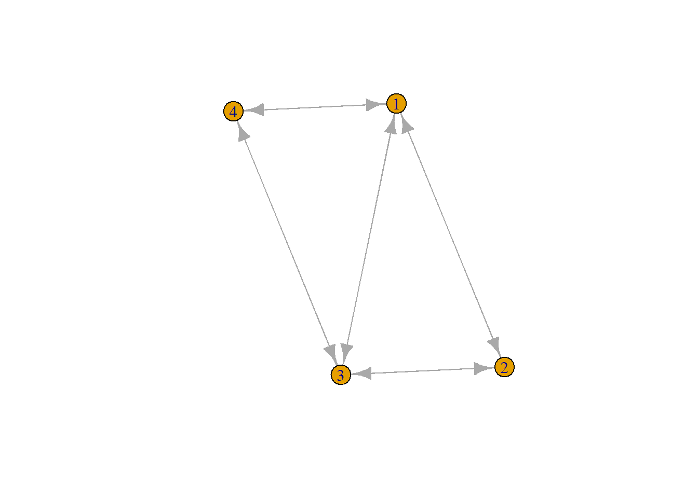

Descriptive Statistics
Paige Kemper
2025-09-12
Last compiled on October, 2025
1 Code review
Starting steps for working with data, networks, adjacency matrices, and visualizations.
R Markdown
2 Make a matrix: Review how to make column, dataframe, and matrix
#matrix(data, nrow, ncol, byrow, dimnames)
num1 <- c(0, 1, 2, 3, 4, 5, 6, 7, 8)
num2 <- data.frame(0, 1, 2, 3, 4, 5, 6, 7, 8)3 Try making a 100x100 matrix
## ego is row, alter is column
base <- c(0, 1)
mat1 <- matrix(base, nrow=100, ncol = 100, byrow = TRUE)
#mat1
mat2 <- matrix(rnorm(1), nrow = 100, byrow = TRUE)
#mat24 Then start small: Make a 4x4 matrix
#in class
numbers <- sample(x=0:1, size = 16, replace = TRUE)
net1 <- matrix(numbers, 4, 4, TRUE)
net1#> [,1] [,2] [,3] [,4]
#> [1,] 1 1 1 1
#> [2,] 0 0 0 1
#> [3,] 0 1 0 0
#> [4,] 0 0 0 04.1 Set the diagonal to 0:
This will start process of making data symmetrical, and would represent undirected ties/an undirected network. If you flip the columns and rows, the matrix will look the same (upper triangle of the matrix becomes symmetric).
diag(net1) <- 0
net1#> [,1] [,2] [,3] [,4]
#> [1,] 0 1 1 1
#> [2,] 0 0 0 1
#> [3,] 0 1 0 0
#> [4,] 0 0 0 0#undirected network -- symmetric matrix
#symmetry - triangle (transpose didn't work) - if flip columns and rows, will have the same matrix
# upper triangle of matrix -- as AS SYMMETRIC4.2 Then review the descriptive statistics
# descriptive statistics
rowSums(net1)#> [1] 3 1 1 0mean(net1)#> [1] 0.3125Now things speed up.
5 Task: how model triad relationships?
First think how this would play out: Directed relationships: per row, for ego 1: if ego has a tie with alter 1, and alter 1 has a tie with alter 2, and alter 3 has a tie with 1 Undirected relationships: per row, if ego 1 has tie with ego 2 and ego 3, and ego 2 and 3 have a tie, XX
SUMMARY - STEPS FOR WHAT COVERED TODAY
## WORKSPACE FOR LEARNING R CODE
# install.packages("igraph")
#code from sample lab notebook
## graph <- graph_from_adjacency_matrix(AM_empty, mode = "directed")
## triad_census(graph)
library(igraph)5.1 Step 1
STEP 1: MAKE A MATRIX We will come back to this matrix to look at directed relationships, which is NOT symmetrical. Randomize start with ’set.seed;
set.seed(124376) #randomized start
matrix1 <- matrix(sample(x=0:1, size = 25, replace = TRUE), nrow = 5, ncol = 5)5.2 Step 2
STEP 2: MAKE MATRIX SYMMETRICAL This will make it possible to review undirected relationships. “t” is a command for transpose. we next will look for the number of ties in an undirected network (and we will be looking at a transitive triad)
symmatrix1 <- matrix1 + t(matrix1) #this will just add over where there are 1's, but it will be a bit redundant
symmatrix1#> [,1] [,2] [,3] [,4] [,5]
#> [1,] 0 1 2 0 1
#> [2,] 1 0 0 1 1
#> [3,] 2 0 0 1 0
#> [4,] 0 1 1 0 1
#> [5,] 1 1 0 1 0symmatrix1[symmatrix1 == 2] <- 1 #neutralize redundancies
# Replacement script -- IF/ELSE
## symmatrix1 <- ifelse(symmatrix1==2,1,0)
diag(symmatrix1) <- 0
symmatrix1#> [,1] [,2] [,3] [,4] [,5]
#> [1,] 0 1 1 0 1
#> [2,] 1 0 0 1 1
#> [3,] 1 0 0 1 0
#> [4,] 0 1 1 0 1
#> [5,] 1 1 0 1 0symmatrix1G <- graph_from_adjacency_matrix(symmatrix1)
class(symmatrix1G)#> [1] "igraph"plot(symmatrix1G) #now we will map the triad relationships
igraph::transitivity(symmatrix1G, type = "undirected")#> [1] 0.4615385dyad_census(symmatrix1G)#> $mut
#> [1] 7
#>
#> $asym
#> [1] 0
#>
#> $null
#> [1] 35.3 Step 3
STEP 3: Now we will look at the dyad relationships: 0 tie, 1-way tie, or mutual (2-way) tie.
Now looking at dyad relationships - need to look at the direction of the relationships. Number of ties in a directed network is not symmetrical.
matrix1G <- graph_from_adjacency_matrix(matrix1)
class(matrix1G)#> [1] "igraph"plot(matrix1G)
igraph::transitivity(matrix1G, type = "undirected")#> [1] 0.4615385dyad_census(matrix1G)#> $mut
#> [1] 1
#>
#> $asym
#> [1] 6
#>
#> $null
#> [1] 35.4 Step 4
STEP 4: We will next look at triad census function: look at the different types of triad relationships Can look at empty dyads within triad: how many one-way and two-way relationships are there? how many are missing?
# HAD TO COMMENT THIS TO MAKE IT KNIT
#triad_census(matrix1G) #from igraph package, it relays the counts for each of the 16 different configurations for directed networks but it doesn't actually say the type of configuration
#install.packages("sna")
#library(sna)
#triad.census(matrix1) #Option 1 for looking at the types of triad census functions
#triad_counts <- triad.census(as.matrix(as_adjacency_matrix(matrix1G))) #Option 2
#print(triad_counts)5.5 Step 5
STEP 5: MAKE 100 ROW AND COLUMN MATRIX AND VISUALIZE DYADS AND TRIADS BOOM
set.seed(178376) #randomized start
matrix100 <- matrix(sample(x=0:1, size = 10000, replace = TRUE), nrow = 100, ncol = 100)
matrix100G <- graph_from_adjacency_matrix(matrix100)
class(matrix100G)#> [1] "igraph"plot(matrix100G)
#igraph::transitivity(matrix100G, type = "undirected")
#dyad_census(matrix100G)
#triad.census(matrix100G) 6 Workspace
WORKSPACE BELOW - From working session in class
# if [1,2]=TRUE and [2,3]=TRUE and [3,1]=true
# if x=1 and
## Text From Working in Class:
library(igraph)
set.seed(123443)
net3 <- matrix(sample(0:1, 16, replace = TRUE), nrow = 4, ncol = 4)
netN <- net3 + t(net3)
netN[netN == 2] <- 1
diag(netN) <- 0
netN#> [,1] [,2] [,3] [,4]
#> [1,] 0 1 1 1
#> [2,] 1 0 1 1
#> [3,] 1 1 0 1
#> [4,] 1 1 1 0## closed triad: 1 connected to 2 and 3, 2 to 1 and 3, and 3 connected to 1 and 2
netG <- graph_from_adjacency_matrix(netN)
class(netG)#> [1] "igraph"plot(netG)igraph::transitivity(netG, type = "undirected")#> [1] 1dyad_census(netG)#> $mut
#> [1] 6
#>
#> $asym
#> [1] 0
#>
#> $null
#> [1] 0## dyad: can have no, 1, or 2-way relationship. different seed
set.seed(123643)
net4 <- matrix(sample(0:1, 16, replace = TRUE), nrow = 4, ncol = 4)
netM <- net4 + t(net4)
netM[netM == 2] <- 1
diag(netM) <- 0
netM#> [,1] [,2] [,3] [,4]
#> [1,] 0 1 1 1
#> [2,] 1 0 1 0
#> [3,] 1 1 0 1
#> [4,] 1 0 1 0netQ <- graph_from_adjacency_matrix(netM)
class(netQ)#> [1] "igraph"plot(netQ)
igraph::transitivity(netQ, type = "undirected")#> [1] 0.75From sample student notebook:
require(igraph)
g <- make_graph("Zachary")
plot(g)
gmat <- as_adjacency_matrix(g, type = "both", sparse = FALSE)
gmat#> [,1] [,2] [,3] [,4] [,5] [,6] [,7] [,8] [,9] [,10] [,11] [,12] [,13] [,14] [,15] [,16] [,17]
#> [1,] 0 1 1 1 1 1 1 1 1 0 1 1 1 1 0 0 0
#> [2,] 1 0 1 1 0 0 0 1 0 0 0 0 0 1 0 0 0
#> [3,] 1 1 0 1 0 0 0 1 1 1 0 0 0 1 0 0 0
#> [4,] 1 1 1 0 0 0 0 1 0 0 0 0 1 1 0 0 0
#> [5,] 1 0 0 0 0 0 1 0 0 0 1 0 0 0 0 0 0
#> [6,] 1 0 0 0 0 0 1 0 0 0 1 0 0 0 0 0 1
#> [7,] 1 0 0 0 1 1 0 0 0 0 0 0 0 0 0 0 1
#> [8,] 1 1 1 1 0 0 0 0 0 0 0 0 0 0 0 0 0
#> [9,] 1 0 1 0 0 0 0 0 0 0 0 0 0 0 0 0 0
#> [10,] 0 0 1 0 0 0 0 0 0 0 0 0 0 0 0 0 0
#> [11,] 1 0 0 0 1 1 0 0 0 0 0 0 0 0 0 0 0
#> [12,] 1 0 0 0 0 0 0 0 0 0 0 0 0 0 0 0 0
#> [13,] 1 0 0 1 0 0 0 0 0 0 0 0 0 0 0 0 0
#> [14,] 1 1 1 1 0 0 0 0 0 0 0 0 0 0 0 0 0
#> [15,] 0 0 0 0 0 0 0 0 0 0 0 0 0 0 0 0 0
#> [16,] 0 0 0 0 0 0 0 0 0 0 0 0 0 0 0 0 0
#> [17,] 0 0 0 0 0 1 1 0 0 0 0 0 0 0 0 0 0
#> [18,] 1 1 0 0 0 0 0 0 0 0 0 0 0 0 0 0 0
#> [19,] 0 0 0 0 0 0 0 0 0 0 0 0 0 0 0 0 0
#> [20,] 1 1 0 0 0 0 0 0 0 0 0 0 0 0 0 0 0
#> [21,] 0 0 0 0 0 0 0 0 0 0 0 0 0 0 0 0 0
#> [22,] 1 1 0 0 0 0 0 0 0 0 0 0 0 0 0 0 0
#> [23,] 0 0 0 0 0 0 0 0 0 0 0 0 0 0 0 0 0
#> [24,] 0 0 0 0 0 0 0 0 0 0 0 0 0 0 0 0 0
#> [25,] 0 0 0 0 0 0 0 0 0 0 0 0 0 0 0 0 0
#> [26,] 0 0 0 0 0 0 0 0 0 0 0 0 0 0 0 0 0
#> [27,] 0 0 0 0 0 0 0 0 0 0 0 0 0 0 0 0 0
#> [28,] 0 0 1 0 0 0 0 0 0 0 0 0 0 0 0 0 0
#> [29,] 0 0 1 0 0 0 0 0 0 0 0 0 0 0 0 0 0
#> [30,] 0 0 0 0 0 0 0 0 0 0 0 0 0 0 0 0 0
#> [31,] 0 1 0 0 0 0 0 0 1 0 0 0 0 0 0 0 0
#> [32,] 1 0 0 0 0 0 0 0 0 0 0 0 0 0 0 0 0
#> [33,] 0 0 1 0 0 0 0 0 1 0 0 0 0 0 1 1 0
#> [34,] 0 0 0 0 0 0 0 0 1 1 0 0 0 1 1 1 0
#> [,18] [,19] [,20] [,21] [,22] [,23] [,24] [,25] [,26] [,27] [,28] [,29] [,30] [,31] [,32]
#> [1,] 1 0 1 0 1 0 0 0 0 0 0 0 0 0 1
#> [2,] 1 0 1 0 1 0 0 0 0 0 0 0 0 1 0
#> [3,] 0 0 0 0 0 0 0 0 0 0 1 1 0 0 0
#> [4,] 0 0 0 0 0 0 0 0 0 0 0 0 0 0 0
#> [5,] 0 0 0 0 0 0 0 0 0 0 0 0 0 0 0
#> [6,] 0 0 0 0 0 0 0 0 0 0 0 0 0 0 0
#> [7,] 0 0 0 0 0 0 0 0 0 0 0 0 0 0 0
#> [8,] 0 0 0 0 0 0 0 0 0 0 0 0 0 0 0
#> [9,] 0 0 0 0 0 0 0 0 0 0 0 0 0 1 0
#> [10,] 0 0 0 0 0 0 0 0 0 0 0 0 0 0 0
#> [11,] 0 0 0 0 0 0 0 0 0 0 0 0 0 0 0
#> [12,] 0 0 0 0 0 0 0 0 0 0 0 0 0 0 0
#> [13,] 0 0 0 0 0 0 0 0 0 0 0 0 0 0 0
#> [14,] 0 0 0 0 0 0 0 0 0 0 0 0 0 0 0
#> [15,] 0 0 0 0 0 0 0 0 0 0 0 0 0 0 0
#> [16,] 0 0 0 0 0 0 0 0 0 0 0 0 0 0 0
#> [17,] 0 0 0 0 0 0 0 0 0 0 0 0 0 0 0
#> [18,] 0 0 0 0 0 0 0 0 0 0 0 0 0 0 0
#> [19,] 0 0 0 0 0 0 0 0 0 0 0 0 0 0 0
#> [20,] 0 0 0 0 0 0 0 0 0 0 0 0 0 0 0
#> [21,] 0 0 0 0 0 0 0 0 0 0 0 0 0 0 0
#> [22,] 0 0 0 0 0 0 0 0 0 0 0 0 0 0 0
#> [23,] 0 0 0 0 0 0 0 0 0 0 0 0 0 0 0
#> [24,] 0 0 0 0 0 0 0 0 1 0 1 0 1 0 0
#> [25,] 0 0 0 0 0 0 0 0 1 0 1 0 0 0 1
#> [26,] 0 0 0 0 0 0 1 1 0 0 0 0 0 0 1
#> [27,] 0 0 0 0 0 0 0 0 0 0 0 0 1 0 0
#> [28,] 0 0 0 0 0 0 1 1 0 0 0 0 0 0 0
#> [29,] 0 0 0 0 0 0 0 0 0 0 0 0 0 0 1
#> [30,] 0 0 0 0 0 0 1 0 0 1 0 0 0 0 0
#> [31,] 0 0 0 0 0 0 0 0 0 0 0 0 0 0 0
#> [32,] 0 0 0 0 0 0 0 1 1 0 0 1 0 0 0
#> [33,] 0 1 0 1 0 1 1 0 0 0 0 0 1 1 1
#> [34,] 0 1 1 1 0 1 1 0 0 1 1 1 1 1 1
#> [,33] [,34]
#> [1,] 0 0
#> [2,] 0 0
#> [3,] 1 0
#> [4,] 0 0
#> [5,] 0 0
#> [6,] 0 0
#> [7,] 0 0
#> [8,] 0 0
#> [9,] 1 1
#> [10,] 0 1
#> [11,] 0 0
#> [12,] 0 0
#> [13,] 0 0
#> [14,] 0 1
#> [15,] 1 1
#> [16,] 1 1
#> [17,] 0 0
#> [18,] 0 0
#> [19,] 1 1
#> [20,] 0 1
#> [21,] 1 1
#> [22,] 0 0
#> [23,] 1 1
#> [24,] 1 1
#> [25,] 0 0
#> [26,] 0 0
#> [27,] 0 1
#> [28,] 0 1
#> [29,] 0 1
#> [30,] 1 1
#> [31,] 1 1
#> [32,] 1 1
#> [33,] 0 1
#> [34,] 1 0A different sample
require(MASS)
set.seed(9864) # We set a seed. In this we the random numbers we will generate be the same and we thus end up with the same dataset. Please not that to be absolutely sure to get the same dataset, we need to run the same R version (and packages).
# let us start with simulating the opinion of both partners.
Sigma <- matrix(c(10, 4, 4, 5), 2, 2)
opinions <- mvrnorm(n = 1000, mu = c(4, 5), Sigma)
opinion_W <- opinions[, 1]
opinion_M <- opinions[, 2]
dyad_id <- 1:1000
# and let's put everything together
data <- data.frame(dyad_id, opinion_W, opinion_M)
# add some description to the data
attr(data, "description") <- "This is a simulated dataset to illustrate interdependencies of observations within dyads (i.e. heterosexual couples). The dataset is in wide-format: one row refers to one couple. Variables with \"_W\" refer to women,\"_M\" refer to men."
# I don't think the variables need any further description.
summary(cars)#> speed dist
#> Min. : 4.0 Min. : 2.00
#> 1st Qu.:12.0 1st Qu.: 26.00
#> Median :15.0 Median : 36.00
#> Mean :15.4 Mean : 42.98
#> 3rd Qu.:19.0 3rd Qu.: 56.00
#> Max. :25.0 Max. :120.00